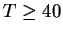

Figure  illustrates the read access graphically.
illustrates the read access graphically.
Since the RW signal is registered in the GAL to function as WROE, it has to fulfill setup and hold times to the end of S1.
As the RW signal is valid during the whole cycle, the hold time is obviously obeyed.
We determine now, when the inner data bus DB is at latest stable. The WROE is valid after the first CPU clock.
At the data bus interface chip there are now 3 concurrent paths, i.e. from the WROE enableing the output, from the WSEL switching to input port (instead of internal register) and the propagation from input to output port.
With  the it follows that the last term determines the maximum. Thus,
Now, we are ready to investigate the setup times at the activating edge of /CS. For the addresses and the RW signal we get
Since the time, when the inner data bus DB is at latest stable is determined by the propagation delay of the ABT652, this reduces the minimum time span between data bus stable and activation of the /CS.
At the same time, the value of the data bus is stored in the internal register of the ABT652. Therefore,
The hold time is again obviously fulfilled.
For the recognition of the activation of /DACK the same equation hold as in the case of a read access.
At the end of the write access, addresses, the RW signal and data have to be held stable until after the hold time of the busmaster devices, i.e.
With the disactivating edge of /CS the data bus interface is switched to its internal register. This allows to hold the internal data bus until the next CPU starts
For the disableing of /DACK the same equation hold as in the case of a read access.